01 / 18
KEIRO USER GUIDE
Keiro
かんたんガイド
LINEにくわしくなくても大丈夫。
この1ページで全部わかる。
管理画面を開く → keiro.s-toru.com
↑ このボタンを押すとKeiroのログイン画面が開きます。
スマホのホーム画面に追加しておくと便利です。
Keiro｜株式会社しっとるかんたんガイド
02 / 18
はじめに
まず覚えるのは
3つだけでOK
Keiroにはたくさんの機能がありますが、ふだんの営業で使うのはこの3つだけ。あとは「必要になったら見る」で大丈夫です。
その1
🔑 ログインする
keiro.s-toru.com を開いて、メールとパスワードを入れるだけ。（→ 03ページ）
その2
💬 受信箱でお客さまに返事する
LINEで届いたメッセージに、ふつうのトークと同じ感覚で返信。（→ 05ページ）
その3
📣 一斉配信でお知らせを送る
キャンペーンや休診のお知らせを、友だち全員（または選んだ人だけ）にまとめて送信。（→ 07ページ）
✅ 安心してください。どのボタンを押しても、確認なしに勝手にメッセージが送信されることはありません。「送信」を押す前に必ず内容を確かめられます。いろいろ触って画面に慣れるのが上達の近道です。
Keiro｜株式会社しっとるかんたんガイド
03 / 18
ログイン方法
ログインは
3ステップで完了
スマホでもパソコンでも同じ手順です。ブックマーク（お気に入り登録）しておくと次から楽になります。
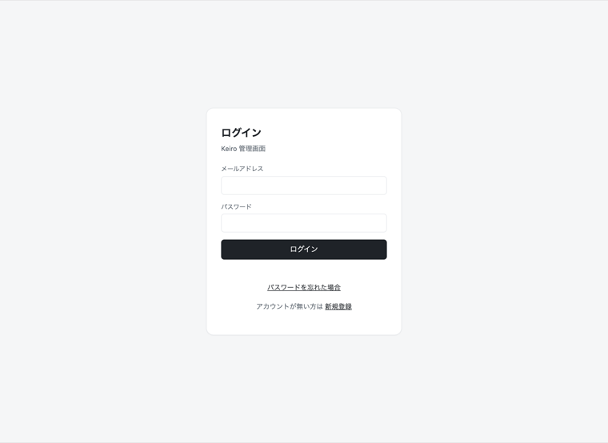
Keiroのログイン画面
STEP 1
keiro.s-toru.com を開くこのガイド1ページ目の緑のボタンからも開けます。
STEP 2
メールアドレスとパスワードを入力開設時にお渡ししたものです。
STEP 3
「ログイン」を押すこれで管理画面（成績表）が開きます。
🔑
パスワードを忘れたらログイン画面の「
パスワードを忘れた場合」を押すと、登録メールに再設定リンクが届き、その場で新しいパスワードを設定できます。メールが届かない場合は
shittoru@s-toru.com までご連絡ください。すぐに対応します。
Keiro｜株式会社しっとるかんたんガイド
04 / 18
画面の見方
最初の画面は
「院の成績表」です
ログインすると出てくる画面（ダッシュボード）は、むずかしそうに見えて実は「今月の院の成績表」。数字の意味さえ分かれば読めます。
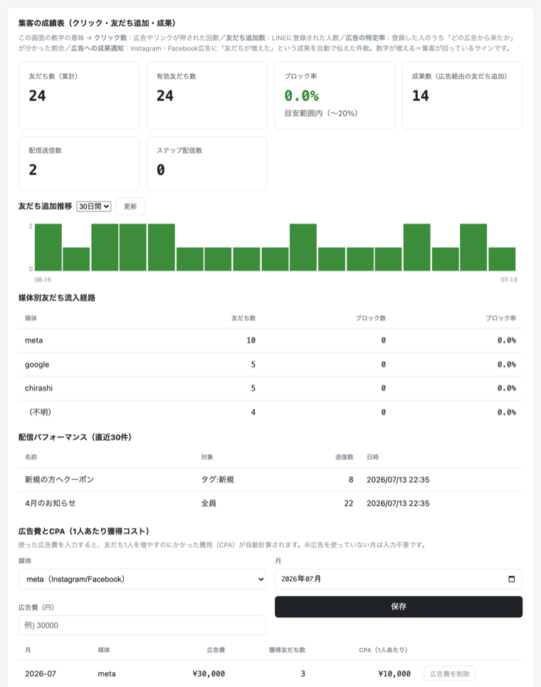
ログイン後の最初の画面。上に今月の成績、下にグラフが並びます
数字の読み方（対訳表）
クリック数
チラシやSNSに載せたリンクが「何回タップされたか」。宣伝を見て興味を持った人の数です。
友だち追加数
あなたの公式LINEに新しく登録してくれた人の数。「新規の見込み患者さん」と思えばOK。
特定率
追加してくれた人のうち「どの宣伝から来たか分かった人」の割合。高いほど、宣伝の効果測定が正確になります。
💡 毎朝ここを見るだけで「昨日は何人増えたか」「どの宣伝が効いているか」が分かります。眺めるだけでOK、操作は不要です。
Keiro｜株式会社しっとるかんたんガイド
05 / 18
受信箱
お客さまへの返事は
「受信箱」から
お客さまがLINEでメッセージを送ってくると、ここに届きます。ふだんのLINEのトークと同じ感覚で使えます。
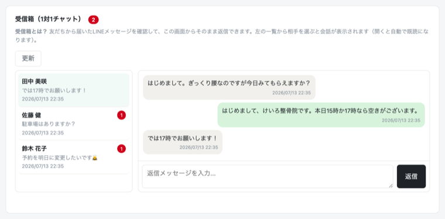
左にお客さま一覧、右に会話。返信もここから送れます
STEP 1
左のメニューから「受信箱」を開く未読があると数字のバッジが付きます。
STEP 2
返事したいお客さまをタップ今までの会話が表示されます。
STEP 3
下の入力欄に文章を書いて送信お客さまのLINEにそのまま届きます。
💬 1対1の返信は何通送っても無料です（LINE社の通数カウント対象外）。安心してていねいにやり取りしてください。
Keiro｜株式会社しっとるかんたんガイド
06 / 18
友だち管理
お客さま一人ひとりの
「カルテ」が見られます
「友だち」ページには、LINEに登録してくれたお客さまが一覧で並びます。一人ひとりに対して、次のことができます。
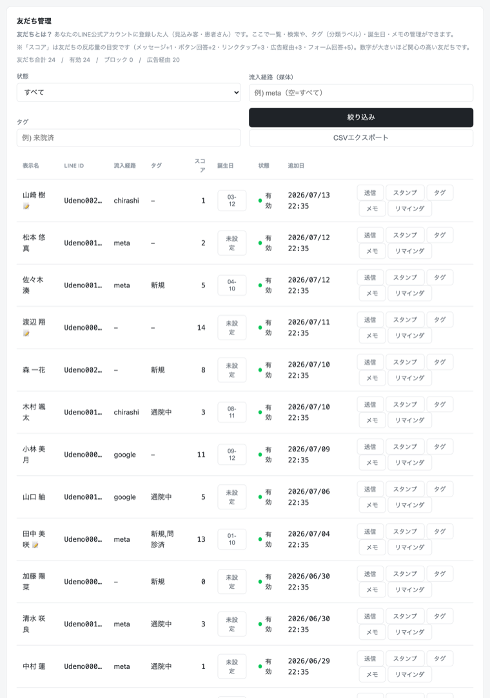
友だち一覧。どの宣伝から来た人かも表示されます
各ボタンでできること
送信
その人だけにメッセージを送ります。個別のフォローに。
タグ
「腰痛」「産後」などの目印を付けられます。あとで「腰痛の人だけに配信」ができるように。
メモ
「次回は◯日に予約」など、自分用の覚え書き。お客さまには見えません。
スタンプ
来店スタンプを押せます。スタンプカード（11ページ）と連動します。
リマインダ
「◯日後にこのメッセージを自動送信」という予約送信を設定できます。
⭐ 名前の横の「スコア」は、その人の反応の良さ（メッセージを読んだ・タップしたなど）を点数にしたもの。高い人ほど「熱心なファン」です。
Keiro｜株式会社しっとるかんたんガイド
07 / 18
一斉配信
お知らせをまとめて送る
「一斉配信」
キャンペーン・休診案内・季節のあいさつなど、友だち全員（または選んだ人だけ）に一度に送れます。
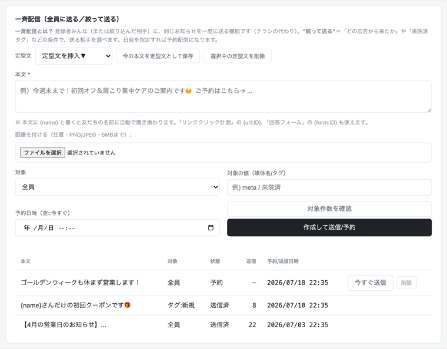
配信の作成画面。送る相手と文章を決めるだけ
STEP 1
「一斉配信」→「新規作成」送る相手を選びます。「全員」でも「タグ付きの人だけ」でもOK。
STEP 2
文章を書く画像も付けられます。書き終わったら送信数の確認画面へ。
STEP 3
「今すぐ送信」か「日時を予約」予約しておけば、当日の朝に自動で送られます。
✨ ちょっとした魔法。文章の中に {name} と書くと、届くときに自動でお客さまの名前に変わります。「{name}さん、こんにちは！」→「田中さん、こんにちは！」。名前入りのメッセージは読まれやすさが段違いです。
Keiro｜株式会社しっとるかんたんガイド
08 / 18
集客の仕組み
どの宣伝が効いたか
数字で分かる仕組み
Keiroの心臓部が「計測リンク」。チラシ・Instagram・Googleなど、宣伝ごとに専用の入口（リンクやQRコード）を作ります。
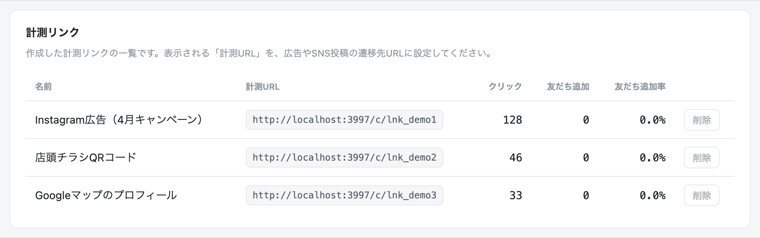
計測リンクの一覧。入口ごとの成績が並びます
🚪 たとえば…
「チラシ用の入口」「Instagram用の入口」「Google用の入口」を分けて作る → お客さまがどの入口から入ってきたかが記録される → 「今月の新規はチラシから8人、Instagramから3人」と一目で分かる。
「効いていない宣伝をやめて、効いている宣伝にお金を回す」——これができるのがKeiroの一番の価値です。
🛠 新しいチラシや広告を作るときは、その都度専用リンクを発行します。作り方が分からなければ、しっとるにご連絡いただければこちらで発行します。広告（Meta/Google）との連携設定もこちらで対応します。
Keiro｜株式会社しっとるかんたんガイド
09 / 18
自動化 その1
寝ている間も働く
「自動のお手紙」
一度設定すれば、あとは全自動。ここは最初にしっとるが設定するので、「こういう仕組みが動いている」と知っておくだけでOKです。
ステップ配信：友だち追加後の自動フォロー
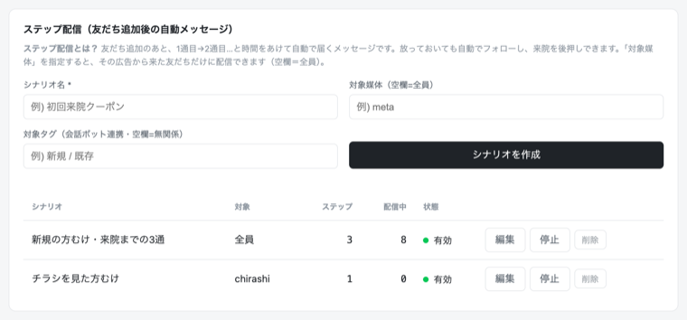
「追加直後にあいさつ→3日後にクーポン→7日後に体験談」のような流れを自動化
友だち追加してくれた人に、決めた順番・タイミングでメッセージが自動で届きます。初回来店につながる大事な仕組みです。
リマインダ：予約すっぽかし防止
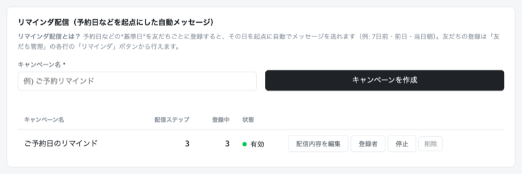
「明日◯時にお待ちしています」を前日に自動送信
⏰ 予約の前日に自動でお知らせが届くだけで、無断キャンセルはぐっと減ります。友だちページ（06ページ）から一人ずつ設定できます。
Keiro｜株式会社しっとるかんたんガイド
10 / 18
自動化 その2
営業時間外も
自動でおもてなし
夜中にメッセージが来ても大丈夫。3つの「自動接客」が代わりに対応します。
自動応答：キーワードに自動返信
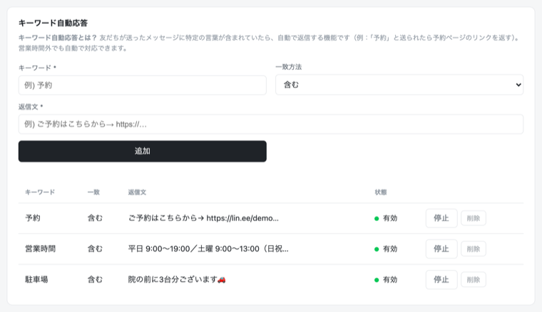
「営業時間」と送られたら営業時間を自動返信、など
会話ボット：選択肢で案内する自動窓口
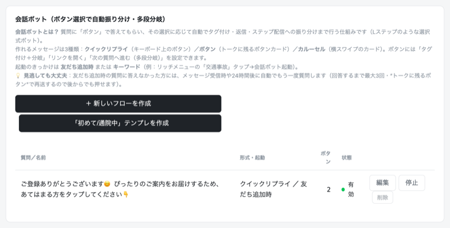
「ご用件は？ → 予約 / 料金 / 場所」とボタンで案内
リッチメニュー：トーク画面の下の大きなボタン
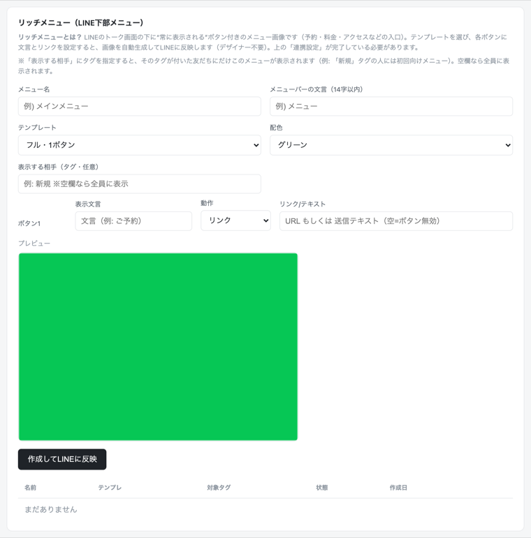
お客さまのトーク画面の下に常に表示されるメニュー
🤖 この3つはすべて返信が無料（通数カウント対象外）。しかも24時間365日、文句ひとつ言わず働きます。
Keiro｜株式会社しっとるかんたんガイド
11 / 18
回答フォーム・販促ツール
問診票もクーポンも
LINEの中で完結
紙の問診票やアンケートを、LINE上のフォームに置きかえられます。
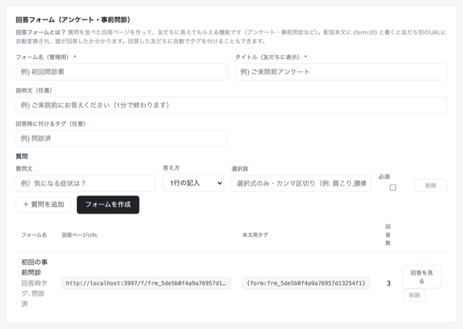
フォームの管理画面。回答は自動でお客さまのカルテに残ります
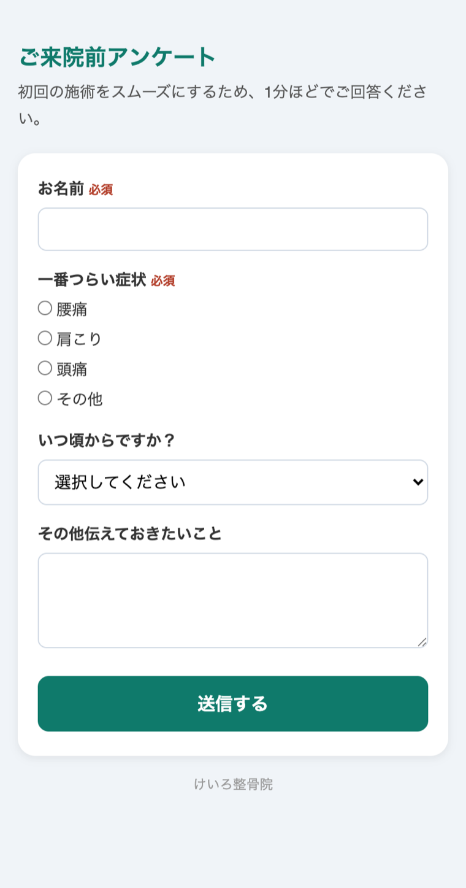
お客さまのスマホにはこう見えます
ほかにもこんな販促ツールが使えます
- クーポン：「初回500円引き」などをLINE上で発行。使われた数も自動で記録。
- 誕生日メッセージ：お誕生日に自動でお祝い＋特典を送信。
- スタンプカード：紙のカード不要。来店ごとにスタンプ、たまったら特典。
🎁 「何から使えばいい？」と迷ったら、まずは初回クーポンから。友だち追加のきっかけとして一番効果が出やすいツールです。
Keiro｜株式会社しっとるかんたんガイド
12 / 18
Keiroの強み
「公式LINEだけ」と
なにがちがう？
公式LINEだけでもお店のLINEは始められます。でも「誰が・どの宣伝から来て・どう効いたか」までは見えません。そこから先がKeiroの仕事です。
公式LINEだけでもできること
1対1のトーク／全員への一斉配信／あいさつメッセージ／かんたんな自動応答／リッチメニュー（画像は自分で用意）／クーポン・ショップカード／おおまかな数字（友だち数・配信数）
⚠️ ただし配信の絞り込みは「性別・年代などのおおまかな属性」まで。「この広告から来た人だけ」「来院済みの人だけ」のような絞り込みや、宣伝ごとの効果測定はできません。
Keiroではじめてできること（プラン別早見表）
| できること | 公式LINE
だけ | Keiro
ライト | Keiro
プロ |
|---|
| 📊 集客の見える化 |
| どの広告・チラシから友だちが来たか計測計測リンク・QRコード・店頭ポスター | × | ○3本まで | ○無制限 |
| 広告の管理画面へ成果を自動通知Meta/TikTok連携。広告の学習が賢くなる | × | － | ○ |
| ファネル分析クリック→友だち追加→成果のどこで減ったか | × | ○ | ○ |
| 広告費対効果（CPA）・ブロック率などの詳細分析 | × | － | ○ |
| 🎯 相手に合わせた配信 |
| タグ・セグメントで「選んだ人だけ」に配信例：来院済み×女性だけに送る | × | ○月4回目安 | ○ |
| 広告ごとに内容が変わる自動ステップ配信タグ条件で1通ずつの出し分けも可能 | × | ○2シナリオ | ○無制限 |
| 予約前日の自動リマインド無断キャンセル対策 | × | － | ○ |
| 誕生日の自動お祝い配信 | × | ○ | ○ |
| 🤖 自動の接客・AI |
| 会話ボットボタン選択でお客さまを自動振り分け | × | － | ○ |
| 誰が答えたか分かる回答フォーム回答した人に自動でタグ付け | × | － | ○ |
| 受信箱のAI返信案・誰がタップしたか分かるリンク計測 | × | － | ○ |
| AIおまかせ全構築・配信文のAI下書き・AIサポート | × | ○ | ○ |
| リッチメニューの自動作成AIに相談・画像も自動生成・タップ数の計測つき | △画像は自分で用意 | ○ | ○タグ別出し分けも |
| 🎁 販促・リピート |
| クーポン・スタンプカード「誰が使ったか」の計測つき | △誰が使ったかは不明 | ○ | ○ |
※ 公式LINEの機能はLINEヤフー社の仕様変更で変わることがあります（2026年7月時点）。
💡 ひとことで言うと：公式LINEだけ＝全員に同じ声かけをする「拡声器」。Keiroを足すと＝相手を見て声をかける「接客係」＋宣伝の「成績表」。「なんとなく配信」から「誰に・何が効いたか分かる集客」に変わります。
Keiro｜株式会社しっとるかんたんガイド
15 / 18
権限管理
しっとるに作業を頼むときの
「権限」の渡し方
リッチメニューの作り直しなど、弊社がLINE公式アカウント側の作業をするときは、あなたのアカウントに一時的に招待していただきます。作業が終わったら削除してOKです。
招待のしかた（約2分）
STEP 01
LINE公式アカウント管理画面を開く右上の「設定」をタップ
STEP 02
「権限管理」→「メンバーを追加」権限の種類は「管理者」を選択
STEP 03
「URLを発行」して、そのURLを担当者のLINEに送る弊社が承認したら完了です
招待URLの有効期限は24時間・1つのURLは1人しか使えません。期限が切れたら、もう一度発行してください。
作業が終わったら（任意）
「設定」→「権限管理」→ 弊社スタッフの「変更」→「このメンバーをアカウントから削除」で外せます。次の作業のときは、また同じ手順で招待してください。
くわしくは
公式マニュアル：権限管理
画面つきの詳しい手順はこちら。
公式マニュアル →
Keiro｜株式会社しっとるかんたんガイド
16 / 18
よくある質問
困ったときは
ここを見てください
それでも解決しなければ、遠慮なくご連絡を。
-
Q1
間違えてボタンを押したら、変なメッセージが送られちゃう？
いいえ。送信前には必ず確認画面が出ます。押しただけで送られることはないので、安心して触ってください。
-
Q2
パソコンがなくても使える？
はい、スマホだけでOK。ブラウザ（SafariやChrome）で keiro.s-toru.com を開くだけです。
-
Q3
パスワードを忘れた！
ログイン画面の「パスワードを忘れた場合」から、自分でその場で再設定できます（登録メールに再設定リンクが届きます）。メールが届かないときは下のメールへ。
-
Q4
配信しすぎると料金がかかるって本当？
一斉配信などは月の上限通数（13ページ参照）があります。1対1の返信や自動応答は無料。上限が近づいたらご案内します。
-
Q5
やめたくなったら？
管理画面の料金表示の近くにある「解約をご希望の方はこちら」から申請できます（メールでのご連絡でもOK）。違約金などはありません。
Keiro｜株式会社しっとるかんたんガイド
17 / 18
新機能ハイライト
もっとラクに使える
新機能のご紹介
-
💬
質問・サポート欄（24時間AIが即答）
使い方で迷ったら、管理画面いちばん下の「❓質問・サポート」に書くだけ。AIがすぐ答えます。解決しないときは「✉️運営に問い合わせる」を押せば担当者から返信が届きます。
-
🪄
AIおまかせ構築
ホームページのURLを貼って「おまかせで全部つくる」を押すと、あいさつ・自動返信・アンケート・メニュー（画像まで）をAIが一括で作ります。あとから自由に直せます。
-
📅
予約システム連携
お使いの予約システムとつなぐと、予約が入った瞬間にお客さまのLINEへ予約確認が届き、前日には自動でリマインドも送られます（設定はご相談ください）。
-
🏠
複数店舗の切り替え
2店舗以上お持ちの場合、画面上部のメニューから店舗を切り替えて、それぞれ別のLINE公式アカウントを運用できます。
-
📊
月イチ成果レポート
毎月はじめに「先月の友だち増加・配信数・クリック数」をまとめたメールが自動で届きます。開くだけで成果がわかります。
-
👀
お客さま体験プレビュー
「新しいお客さまが友だち追加すると、どんなメッセージがどの順番で届くのか」を、管理画面の中のスマホ風画面で疑似体験できます。「登録直後」「3日後」などの時点を切り替えたり、ボタンを実際にタップしたりして確認できます（お客さまには何も送信されません）。
Keiro｜株式会社しっとるかんたんガイド
18 / 18
ご契約とお支払い
料金と無料期間、
お支払いの流れ
最後にお金の話をわかりやすく。無料期間のあいだは1円もかかりません。安心して読み進めてください。
プランと料金（税込・月額）
ライトプラン
月額 4,980円
計測リンク・受信箱・一斉配信など、基本の機能が使えます。
プロプラン
月額 9,800円
ステップ配信・自動応答・ボット・リッチメニュー・販促ツールまで、全機能が使えます。
無料期間
14日間
ご自身で新規登録された場合の無料期間です。
30日間
公式LINE制作パックをお申し込みの方にはパスコードをお渡しします。新規登録のときに入力すると、プロプランが30日間無料になります（あとから「契約・支払い」画面で入力してもOK）。
お支払い方法の登録（無料期間中にお願いします）
-
1
管理画面の「契約・支払い」を開き、「お支払い方法を登録」ボタンを押します。
-
2
決済会社（UnivaPay）の安全なページが開くので、クレジットカードを登録します。カード情報が当社に伝わることはありません。
-
3
メールアドレスは、Keiroにご登録のものと同じアドレスを入力してください。ここが違うと、お支払いとアカウントが自動でつながりません。
💳 カードを登録しても、請求が始まるのは無料期間が終わってからです。無料期間中の請求はありません。
解約したいとき
管理画面から、または公式LINEでひとことご連絡ください。解約のお申し出の翌月から料金はかかりません（月の途中の日割り精算はありません）。無料期間中の解約なら、料金は一切かかりません。
📄 くわしい条件は keiro.s-toru.com/legal/terms（利用規約）をご覧ください。
Keiro｜株式会社しっとるかんたんガイド